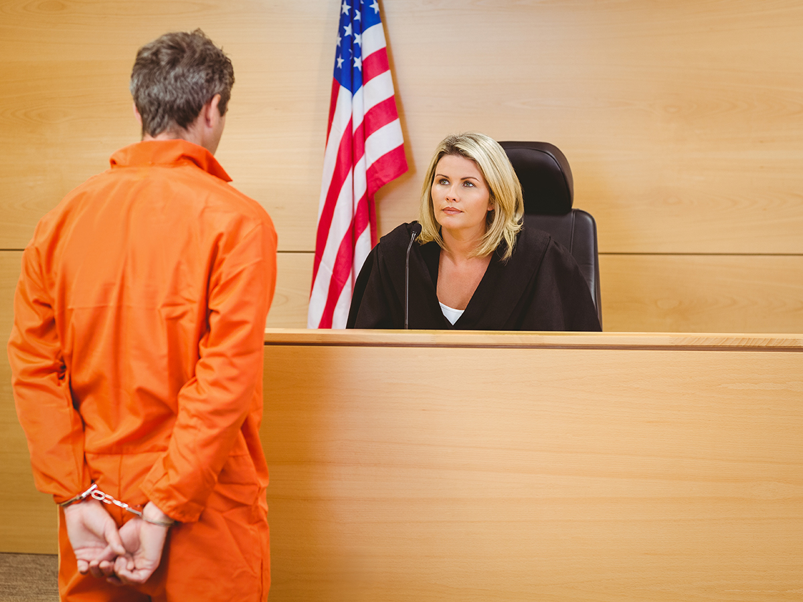
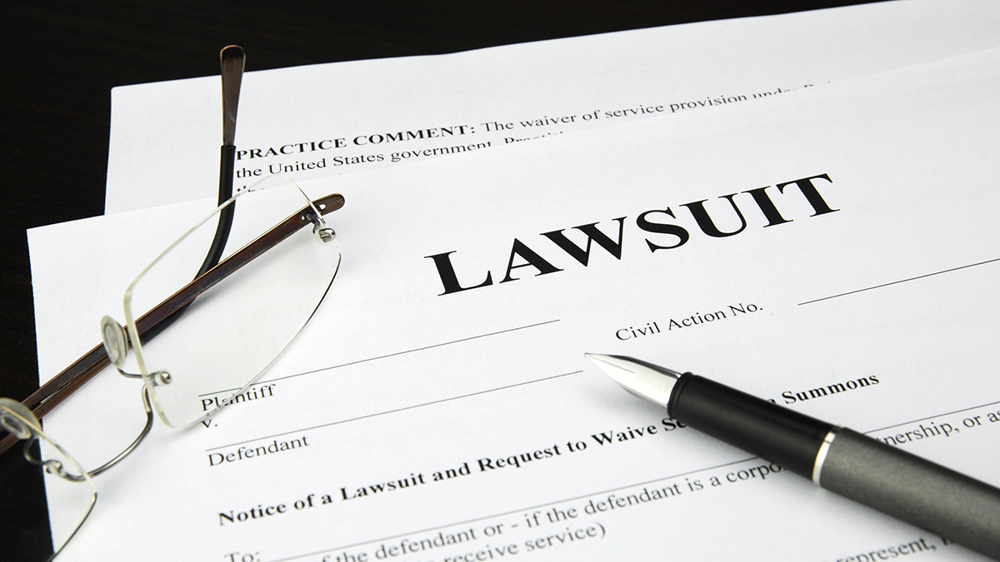

There are two types of legal disputes, criminal and civil.

Criminal law is law related to the punishment of people who commit crimes. This type of law is intended to ensure public safety and protect the public from criminal activity. It involves the federal or state government building a criminal case against someone accused of an offense.
A crime is an illegal action or omission that constitutes an offense that may be prosecuted by the government and is punishable by law. The criminal justice system exists to handle crimes as they occur by appropriately penalizing criminal offenders and seeking to prevent them from committing further crimes.
The criminal justice system involves multiple institutions and individuals. Courts play a major role in the system. Whether someone goes to trial in a state or federal court depends on whether the person broke a state law, a federal law, or both. Most criminal cases involve the violation of state laws and, therefore, are heard in state courts.
Review the information below to learn more about the parties involved in a criminal case.
Select each item to learn more.
The prosecutor is the lawyer who tries to prove the person on trial is guilty of a crime. The prosecutor represents the government, as the government is the party carrying out legal action against the accused. The prosecutor must follow due process, which is a set of rules that protects the rights of the accused. For example, because the Fourth Amendment protects people from unreasonable search and seizure, the prosecutor cannot use evidence obtained in ways that violate this protection.
In a criminal case, the defendant is the person accused of a crime. As the word implies, defendants defend themselves against the prosecution. The defendant has the right to a defense attorney who supports the defendant. Because most people are not experts in law, accused people may work with defense attorneys who understand complex legal rules and know how to use the law to effectively defend someone. The attorney may speak for the defendant in court.
The Sixth Amendment states that the accused has a right to a trial by jury. In a jury trial, members of the public (not court officials) make the decision in the case. Juries are made of everyday people, not law enforcement officers, so they may be better able to represent the public's viewpoint and focus on the overall case rather than legal technicalities. In most instances, a jury must be unanimous in order for a defendant to be criminally convicted.

Civil disputes occur when one party has a disagreement with another party and the courts are asked to settle the conflict. A party can be an individual, a group of people, a corporation, or the government itself. In such a case, the courts can be asked to settle a contractual issue or decide who is to blame in the case of a workplace accident.
Civil cases usually involve disputes between private parties. Individuals file civil lawsuits to seek compensation for the harm they have suffered at the hands of others. They usually seek monetary compensation and, on occasion, an injunction modifying behavior against another party.
One issue that has been the cause of several high-profile civil lawsuits in recent years revolves around music rights. Taylor Swift was sued in 2017 in a lawsuit that was not settled until December 2022. In the lawsuit, songwriters Sean Hall and Nathan Butler sued Taylor Swift, arguing that she stole lyrics for her hit song “Shake It Off” from a song they wrote in 2000 that was released by the R&B group 3LW. Their song contained the line “Playas, they gonna play/And haters, they gonna hate.” In Taylor Swift’s “Shake It Off” song, she sings, “Cause the players gonna play, play, play, play, play and the haters gonna hate, hate, hate, hate, hate.” In their complaint, the duo said Swift’s lyric was clearly copied from their song.